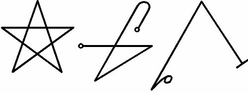

Bu, Gözcünün Çağrılışının Kitabı’dır, çünkü Efendimiz ve Bütün Majinin Tanrısı ENKI’nın Katibi’nden aldığım formüllerden oluşur. Bu evcilleşmemiş Ruhun Rahip’e karşı başkaldırmaması için çok fazla özen gösterilmelidir ve bu nedenle temiz ve yeni bir kase içinde, orada tavsiye edilen, benim inisiye olduğum kayanın üzerine oyulmuş üç gri işaret:

Güzel bir üslupta kase üzerine oyulmaları ya da siyah mürekkep ile resmedilmeleri gerekir. Kurban olarak taze ekmek, çam reçinesi ve Olieribos otu kullanılmalıdır. Bunlar yeni kase içinde yakılmalı ve Mührü oraya oyulmuş olan Gözcünün, Kılıcı elde tutulmalıdır, çünkü Gözcünün Çağrısı sırasında orada oturacak ve ayrılması için yetki verildiğinde ayrılacaktır.
Gözcü İnsanın ve Tanrılarınkinden farklı bir Irktan gelir ve söylenildiğine göre Dünyalar arasındaki savaş sırasında KINGU ve onun sürüleri ile birliktedir, ancak hoşnut olmamış ve Tanrı MARDUK’un Ordularına bağlı kalmıştır.
Bu nedenle Ona, Meydan okumadan önce varolan, ondan Gözcünün doğduğu ve Onun Irkının türediği Üç Yüce Gözcünün Adlarıyla Dua etmek akıllıca olacaktır ve bu Üçü ANU, ENLIL, ve Majik Suların Efendisi ENKI’dir. Ve bu nedenle Onlara bazen Üç Gözcüler, MASS SSARATI ve Gözcü MASS SSARATU veya KIA MASS SSARATU denir.
Ve Gözcü bazen, Kapının veya Dairenin civarında etrafı kolaçan eden, her zaman için bariyerlerin civarında sinsice dolaşıp kurbanlığı bekleyen idimmu’yu korkutup kaçıran büyük ve öfkeli bir Köpek olarak ortaya çıkar. Ve Gözcü bazen, Alev Kılıcını yükseklerde tutan yüce ve soylu bir ruh olarak belirir ve o suretle Yaşlı Tanrıların bile saygısını kazanır. Ve bazen Gözcü uzun bir Elbise içinde, matruş, feri sönmüş gözleriyle bir İnsan şeklinde görünür. Ve Gözcülerin Tanrısı, söylenene göre, IGIGI’nın ıssızlıklarında ikamet eder ve yalnızca gözler ve Yaşlı Tanrılar Kurulunun, Yedi Muhteşem APHKHALLU gibi, olağan sayısından daha az kişiyle toplanarak Akte başvurması durumu haricinde asla Kılıcı kaldırmaz veya idimmi ile savaşmaz.
Ve bazen Gözcü, büyülü sözleri hatalı söyleyen veya kurbanlıkları unutan ya da Akte karşı gelecek şekildeki davranışlarda, Yaşlı Tanrıların bu sessiz Irka, geçiş ücretini almasını yasaklayamadığı bazı davranışlarda, Rahibi yemeğe hazır bir Düşman olarak belirir. Ve o Irktan bazılarının Kadimlerin bir kez daha Kozmosu yönetmesi için yatarak beklediği, bunlara onların güvenilir yardımcıları olma onurunun verileceği, böylelerinin kanunsuz olduğu söylenmektedir. Söylenenler böyledir.